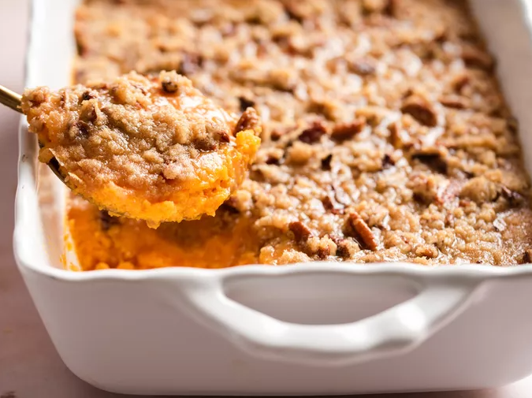

Sweet potatoes casserole recipe

This baked potato casserole topped with a delicious pecan topping
is so good and creamy - my family begs me to make it every
Thanksgiving and Christmas!
Try this recipe and I'm sure it will
become your new tradition.
Ingredients:
Sweet Potatoes
- 4 cups peeled, cubed sweet potatoes
- 2 large eggs, beaten
- 1/2 cup milk
- 1/2 cup sugar
- 4 tablespoons butter, softened
- 1/2 teaspoon vanilla extract
- 1/2 teaspoon salt
Pecan Topping
- 1/2 cup packed brown sugar
- 1/3 cup all-purpose flour
- 3 tablespoons butter, softened
- 1/2 cup chopped pecans
How to make them:
Step 1
Gather the ingredients. Preheat oven to 325 degrees F (165 degrees C).
Step 2
To prepare the sweet potatoes: Put sweet potatoes in a medium saucepan and
cover with water. Cook over medium-high heat until tender, 10 to 15 minutes.
Drain and transfer to a large bowl.
Step 3
Mash drained sweet potatoes with a fork.
Add eggs; mix until well combined. Add sugar, milk, butter, vanilla, and salt; mix until smooth.
Transfer to a 9x13-inch baking dish.
Step 4
To make the topping: Mix brown sugar and flour together in a medium bowl
Cut in butter with a pastry cutter until mixture is coarse and looks like peas; don't overmix.
Stir in pecans. Sprinkle topping over sweet potato mixture.
Step 5
Bake in the preheated oven until topping is lightly browned, about 30 minutes.
Step 6
Serve and enjoy!